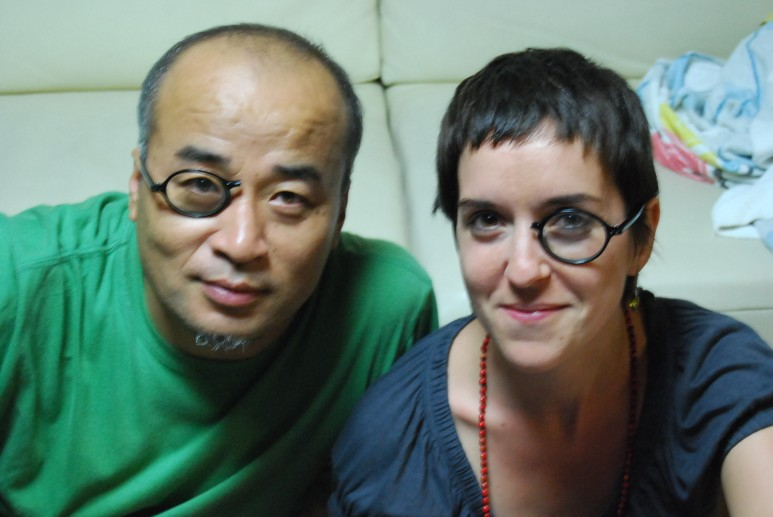

스페인 바로셀로나에서 태어나서
독일 베를린에서 활동하고 있는 자스미나 로베,
그녀는 한국의 이곳저곳을 분주하게 돌아다니며
작업에 필요한 정보를 모으고 있다.
그녀에게 한국에서, 석수시장에서의 3개월은
또다른 나눔과 배움의 시작일 터이다.
부러진 안경을 나누어 쓰면
서로의 시각이, 견해가 조금이라도 같아지지 않을 까 해서
벌인 작은 포퍼먼스다.
사진: 자원봉사 활동가 박강연(양명여고 2학년)
2008-09-12
saptap.egloos.com 에서 옮김